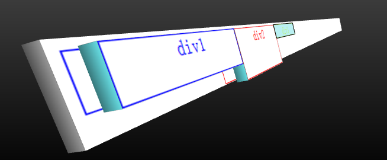
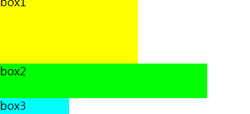

分享人：熊凡
目录
1.背景介绍
2.知识剖析
3.常见问题
4.解决方案
5.编码实战
6.扩展思考
7.参考文献
8.更多讨论
什么是浮动？
浮动float出现的本意是用来实现文字像流水一样环绕元素的效果。但CSS是门相当灵活的语言。某个CSS属性被用于的场景，可能会完全违背当初创造该CSS属性的本意。比如今天我们要讲的float，由于可以很简单的实现多列而常被用作布局。
假如某个div元素A是浮动的，如果A元素上一个元素也是浮动的，那么A元素会跟随在上一个元素的后边(如果一行放不下这两个元素，那么A元素会被挤到下一行)；如果A元素上一个元素是标准流中的元素，那么A的相对垂直位置不会改变，也就是说A的顶部总是和上一个元素的底部对齐。
有哪些清除浮动的方法？
1、使用clear
clear : none | left | right | both
2、增加一个清除浮动的子元素
3、用:after伪元素
4、父元素设置 overflow:hidden
5、父元素也设成float
6、父元素设置display:table。
什么是BFC？
BFC就是“块级格式化上下文”的意思，创建了 BFC的元素就是一个独立的盒子，不过只有Block-level box可以参与创建BFC， 它规定了内部的Block-level Box如何布局，并且与这个独立盒子里的布局不受外部影响，当然它也不会影响到外面的元素。
还有哪些清除浮动的方法？
谢谢大家
制作人： 熊凡